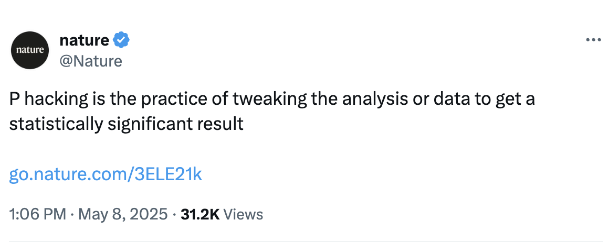
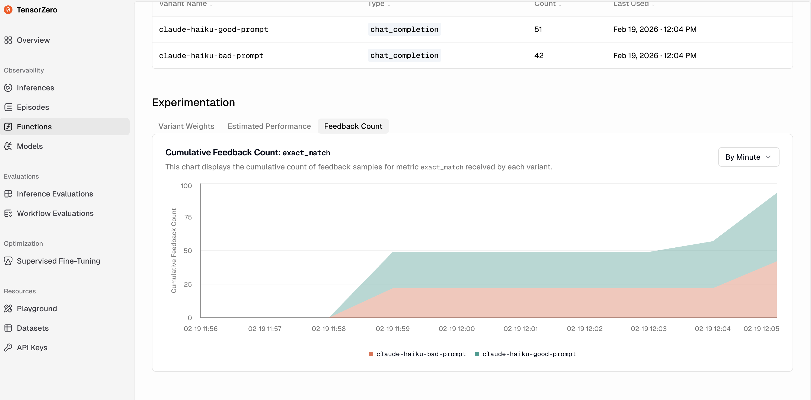

Traditional A/B testing can lead to false results. TensorZero's adaptive experimentation confidently chooses the best variants and frees up resourcing in just 3 lines of code.
When we don’t know the underlying truth in the real-world, i.e. which option A or B will improve the user experience, experimentation (A/B testing) with production traffic is the most reliable way to test the best prompts and models for your task. Yet, traditional A/B testing methods have fundamental limitations.
In traditional A/B testing, you must fix either the sample size or test duration in advance (which risks collecting too little or too much data), or repeatedly check for statistical significance (which inflates your error rates; this is the classic “p-hacking” problem).
Popular definition of p-hacking on X
Research found that approximately 70% of all A/B test experiments are actually null. But when an experiment works, the winning variant typically improves the key metric by about 11% over baseline. As such, p-hacking to a false positive can cost you the finding of this improvement i.e. the opportunity cost of p-hacking means the loss in potential improvement.
Traditional A/B testing does not take the variants’ sequential performance into account, even after it becomes obvious when one is underperforming. A better strategy is to concentrate sampling on the most promising variants as confidence grows, minimizing wasted resources on underperforming variants. Metaphor: Think of it as a horse race where you're forced to keep betting equally on a losing horse, even as another has lapped it.
While you can never know the counterfactual variant that was missed, in other words, the outcomes of the alternative option that was not picked, we can look at what successful A/B testing has done and see what might be missed if it is not done correctly.
Imagine if Google had not ran a proper A/B test: that would have led to $200 million of year on year loss for the last 16 years since 2009. Netflix and Duolingo both attribute data-driven experimentation as core tenets of their growth. Without proper experimentation, Google might have lost $3.5B total and Netflix and Duolingo might not exist.
In this post, we’ll introduce a multi-armed bandit algorithm that enables adaptive experimentation with dynamic stopping, a more efficient approach that addresses both these limitations. We’ll explain how it works, show you how to implement it for your LLM applications using TensorZero, and demonstrate its advantages with real experimental data.
“Multi-armed bandits” is a classic mathematical framework from reinforcement learning and sequential decision-making.
Imagine a gambler facing a row of slot machines, each with an unknown payout (“reward” distribution) chance. At each turn to play the slots, the gambler has to decide which lever to pull in order to obtain a payout and learn about that machine’s chances of reward.
Similarly, multi-armed bandit algorithms use the historical wins (rewards) to guide the decisions about which arm to pull in order to achieve a given objective, such as picking the best option to drive more ad click-throughs. In the context of LLM experimentation, an “arm” represents a particular LLM configuration: a choice of model, prompt, hyperparameters, inference strategy, and so on.
Each machine has a hidden win rate. Pull the arms to find the best one. The curves above update your belief about each machine's true win rate as evidence accumulates.
Set each variant's true success rate, then press Play to watch traffic shift.
Current traffic allocation
Toggle between Adaptive and Uniform A/B to see the difference in how quickly each identifies the winner. With the default settings, adaptive sampling identifies the winner approximately 37% faster.
Recap of traditional A/B methods:
Fixing sample size upfront risks under-collecting (inconclusive) or over-collecting (wasted).
Frequent looks inflate false positives, which means missing out on million dollar impovements.
TensorZero uses the Track-and-Stop (T&S) strategy to find the best-arm in the multi-arm bandit problem, i.e. finding the best lever to pull among many slot machines.
1. Track: The algorithm calculates the optimal proportion of times to play each machine and tries to "track" (match) those proportions.
2. Stop: The "Stop" part means that once the algorithm is very confident it has found the best machine (based on statistical evidence), it stops exploring and focuses only on the best one.
You might be tempted to check your test statistic as experimentation data arrives and stop as soon as your data looks decent (typically p<0.05). However, this practice known as p-hacking or premature stopping unknowingly inflates your false positive rate i.e. choose the wrong version. This is known as “p-hacking” or probability hacking.
1. Real Statistical Validity TensorZero addresses premature peeking, or p-hacking, using an anytime-valid statistical test. It allows you to check results and draw conclusions at any point without breaking statistical rules, ensuring your results are trustworhty and accurate.
2. Improving A/B Efficiency and Minimizing Losses In traditional experimentation, it’s extremely unlikely that you’d land on the optimal proportions for testing (i.e. the exact number of weeks to experiment for) by chance. TensorZero learns the optimal proportions (length of time, and share of traffic) as the experiment progresses over time, and dynamically allocates traffic to converge toward the best variants. In other words, we minimize the number of wrong arm pulls on the slot machine, analogous to minimizing the number of users who are shown a bad prompt. As soon as the track-and-stop algorithm has identified a winner with sufficient confidence, it stops the experiment and directs all subsequent traffic to that winner.
We found in our experiments adaptive sampling reduced the average time to correctly identify the best variant by 37% compared to traditional methods.
We typically provide sensible default parameters for most use cases that don't need editing, but you can customize the T&S algorithm for advanced TensorZero users. Here's the intuition:
1. δ (delta): Error tolerance Similar to a p-value. The probability the algorithm declares the wrong variant the winner. Default is 0.05 (5% error rate).
Contextualizing: For high-stakes experiments, billing flows, authentication, core conversion paths, you can set it lower like 0.01. For low-stakes tests like copy tweaks or formatting changes, 0.10 could be reasonable.
2. ε (epsilon): Minimum difference between variants At ε = 0, the algorithm won't stop until it's fully confident one variant is strictly the best. Setting ε > 0 means the algorithm will stop as soon as it finds any variant performing within ε of the best, which typically means a faster conclusion in exchange for occasionally missing a marginal win.
Example: ε = 0.05 and Variant A has a 72% win rate while Variant B has a 69% win rate, the algorithm treats them as equivalent and may declare either the winner, stopping sooner than if it had to prove A was strictly better.
Adjust δ and ε to see how they affect estimated experiment length across 4 variants.
These parameters present a fundamental tradeoff: higher sensitivity and lower error rates require longer experiments. Decreasing ε enables detection of better arms but requires more samples to distinguish variants that are close in performance. Decreasing δ (e.g. from 0.05 to 0.01) provides stronger statistical guarantees but requires more samples since more evidence is needed to confidently identify the best variant.
The quickstart gets you to a working experiment in under 15 minutes. Works with Claude, GPT-4, Gemini, or any OpenAI-compatible endpoint.
Register extract_entities with an output schema, then declare your variants such as
two different system prompt templates.
Set type = "track_and_stop", list your candidate variants, name a metric, and set
update_period_s to control how often allocations recalculate.
Use exact_match (boolean) is the optimization metric. Add
jaccard_similarity (float) is a tracked metric, not in the experimentation metric block.
The gateway routes live traffic, shifts allocations every update_period_s, and stops the
experiment once a winner is identified with statistical confidence.
View your results in the Functions Tab.
Example dashboard results
3 lines of code. Open source. Works with whatever model and stack you're already using.